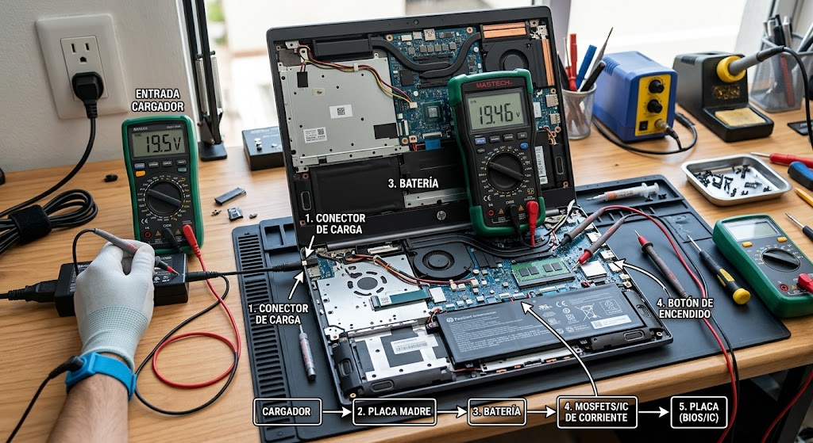
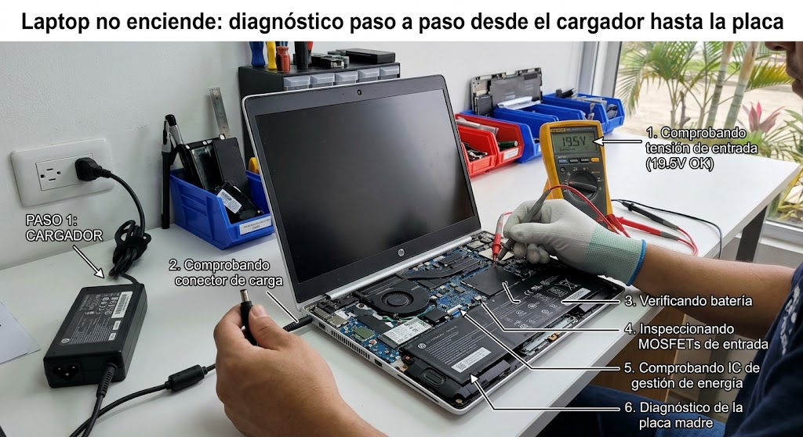
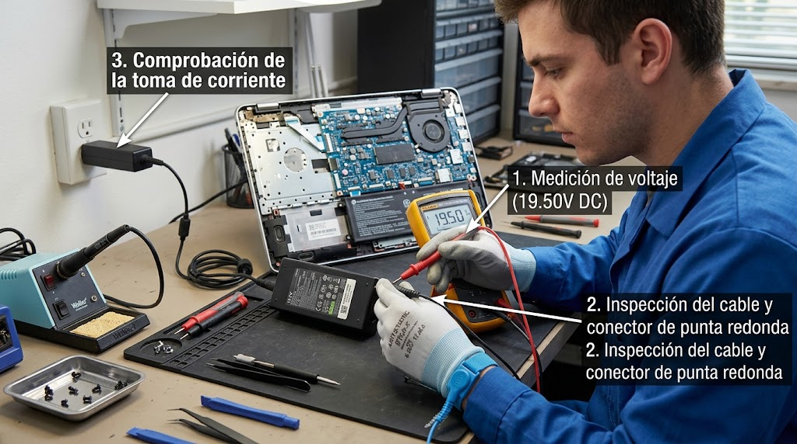
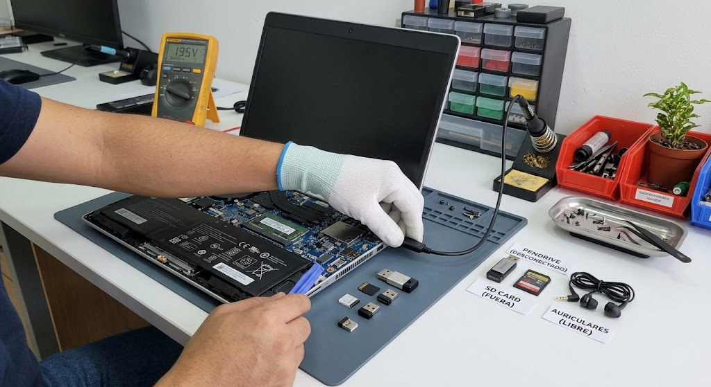
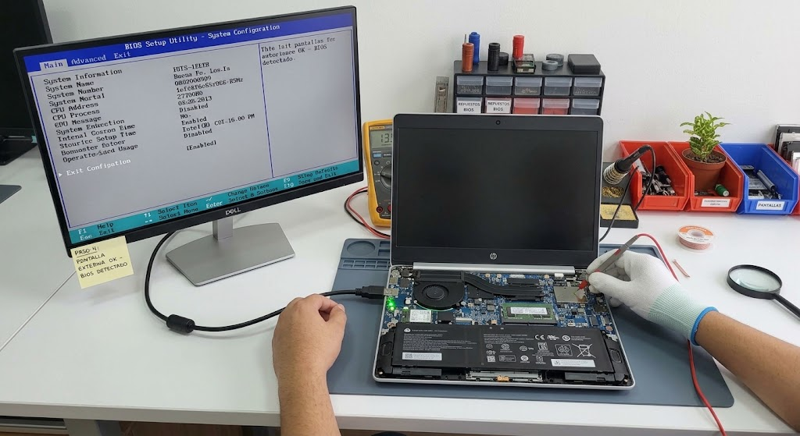
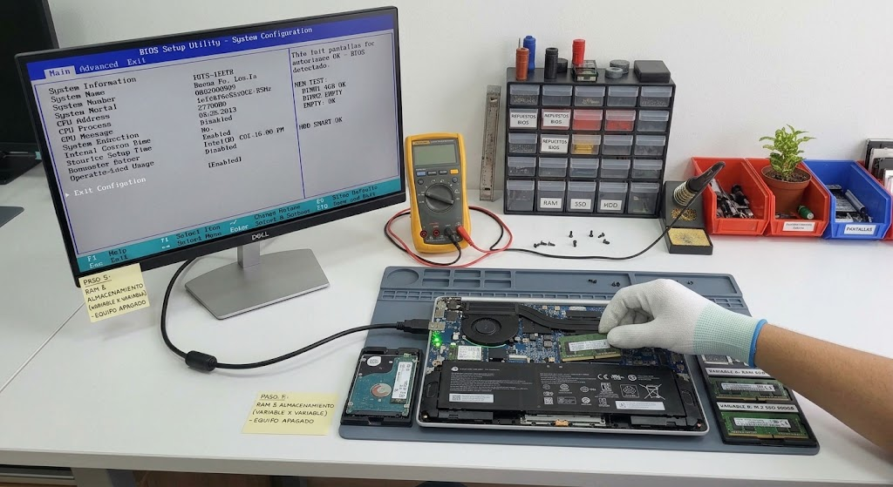
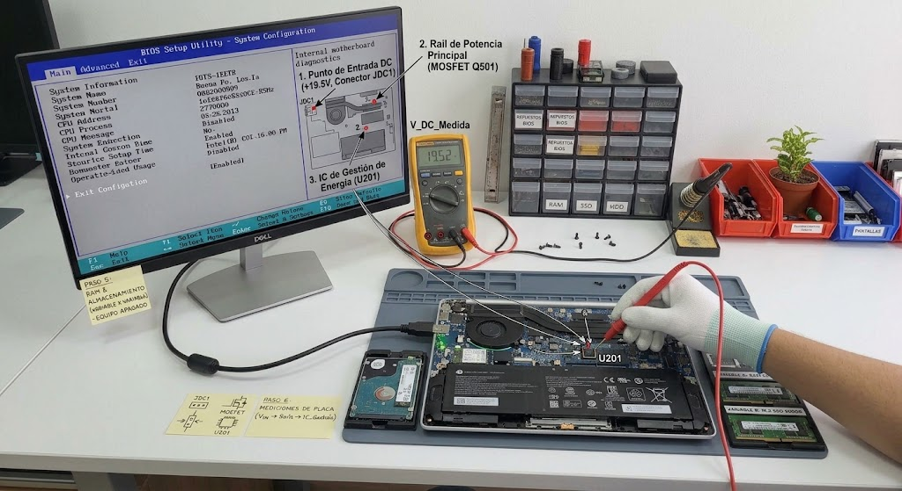

Introducción

La meta es llegar a una hipótesis con evidencia. No se trata de desmontar por desmontar: cada paso elimina una causa posible y prepara el siguiente.
Antes de empezar: seguridad
Retira alimentación y periféricos antes de abrir. No trabajes con una fuente de red abierta ni realices mediciones energizadas si no tienes formación e instrumental apropiados.
- Trabaja sobre una superficie limpia, seca y bien iluminada.
- Organiza tornillos y conectores por etapa.
- Fotografía conexiones antes de desconectarlas cuando desmontes.
- No fuerces una cubierta: una resistencia inesperada suele indicar una fijación pendiente.
Herramientas y material
Diagnóstico paso a paso
Identificar el síntoma
Diferencia entre no LED, LED sin imagen, ventilador sin imagen y arranque que llega al logo.

Qué hacer
- Sin LED de carga ni de encendido: la corriente no llega a la placa (cargador, puerto DC o circuito de carga).
- LED de carga encendido pero no responde al botón: puede ser el propio botón, o carga residual atascada en el circuito ("flea power").
- Ventilador y LEDs encienden pero no hay imagen ni en pantalla externa: el POST no completa; sospecha de RAM, placa o vídeo.
- Llega al logo del fabricante y se apaga o congela: el POST terminó bien, la falla está en RAM, almacenamiento o el sistema operativo.
Antes de desmontar nada, prueba un reinicio de hardware: desconecta el cargador, retira la batería si es extraíble, mantén el botón de encendido presionado 15-30 segundos para drenar la carga residual, y vuelve a conectar solo el cargador.
Resultado esperadoSi el reinicio de hardware soluciona el problema, era carga residual acumulada, no una pieza dañada. Si no cambia nada, sigue la rama del patrón identificado.
Probar cargador y toma
Comprueba toma, adaptador y conector. Si es USB-C, utiliza un cargador compatible con potencia suficiente para el equipo.

Qué hacer
- Verifica que el propio adaptador tenga corriente probándolo en otra toma, para descartar el cable de pared.
- Prueba con otro cargador original o certificado del mismo voltaje y amperaje mínimo: un amperaje inferior al que pide el equipo puede impedir el encendido aunque parezca "cargar" despacio.
- Si es USB-C, revisa que entregue el wattage que exige el laptop (no todos los cargadores de 65W son intercambiables entre marcas) y prueba también con otro cable USB-C, porque el cable falla con frecuencia.
- Observa el LED de carga del equipo: un parpadeo específico suele ser un código de error de carga documentado en el manual del fabricante.
No dejes el equipo cargando horas "a ver si prende" con un cargador sospechoso: un voltaje incorrecto sostenido puede agravar un circuito de carga ya dañado.
Resultado esperadoSi con un cargador confirmado bueno tampoco enciende, el cargador queda descartado; continúa al paso 3. Si enciende con otro cargador, el original (adaptador o cable) es el responsable.
Eliminar periféricos
Desconecta USB, tarjetas y accesorios. Realiza un intento de arranque limpio.

Qué hacer
- Desconecta todo USB, HDMI, tarjetas SD, mouse y estaciones de acoplamiento (docks): un accesorio con corto interno puede impedir el arranque sin señales visibles de daño.
- Si usas un dock o hub USB-C para cargar, conecta el cargador original directo al puerto de carga del equipo, sin el dock de por medio.
- Intenta encender solo con cargador; si la batería es removible, prueba primero sin ella.
La única forma confiable de descartar un accesorio con corto es quitar todo sin excepciones, incluida la tarjeta SD que a veces queda olvidada en el lector.
Resultado esperadoSi con todo desconectado enciende, reconecta periféricos de uno en uno hasta identificar el causante. Si sigue sin encender, continúa al paso 4.
Separar imagen de encendido
Si hay LED o ventilador, conecta una pantalla externa cuando sea apropiado y observa si el equipo llega a BIOS.

Qué hacer
- Conecta un monitor externo por HDMI antes de encender el equipo: si aparece imagen ahí pero la pantalla interna queda negra, el problema es la pantalla, su cable flex o el inversor, no la placa.
- Si tampoco hay imagen en el monitor externo, prueba forzar la salida de vídeo con la combinación de teclas del fabricante (Fn + tecla de monitor), por si el equipo envía la señal solo a la pantalla interna.
- Presta atención al sonido de arranque de Windows aunque no haya imagen: si suena, el sistema operativo sí está cargando y el problema queda acotado a vídeo.
Si aparece BIOS o el sonido de arranque en el monitor externo, placa, CPU y RAM quedan descartadas: el problema es de pantalla, cable flex o GPU.
Resultado esperadoImagen en el externo pero no en el interno → pantalla o cable flex. Sin imagen en ninguno, con LEDs y ventilador activos → sigue al paso 5 antes de sospechar de la placa.
RAM y almacenamiento
Solo si el modelo lo permite, inspecciona RAM y almacenamiento con el equipo apagado. Prueba una variable cada vez.

Qué hacer
- Con el equipo apagado y desconectado, accede al panel de RAM/SSD por la tapa inferior (si la RAM está soldada, omite esta prueba y arranca desde un USB de diagnóstico en su lugar).
- Si hay dos módulos, retira uno y enciende; repite con el otro módulo solo. No pruebes ambos a la vez ni cambies también el disco en la misma prueba.
- Reasienta el módulo presionando hasta oír el clip de los seguros laterales: un falso contacto por polvo o mala inserción es una causa común tras transportar el equipo.
- Desconecta el disco y enciende sin él: si aparece un mensaje de "no boot device" en vez de pantalla negra, la placa y la RAM están bien y el problema es del disco o su cable.
Cambia una sola variable por prueba: memoria por un lado, disco por otro; si sustituyes ambos a la vez y funciona, no sabrás cuál era la pieza dañada.
Resultado esperadoSi con un solo módulo enciende, el otro módulo o su slot está dañado. Si sin el disco aparece un mensaje de arranque, el problema es del almacenamiento. Si nada cambia, sigue al paso 6.
Escalar a placa
Si no hay respuesta tras pruebas externas y componentes accesibles, la placa requiere mediciones específicas del modelo.

Qué hacer
- Si agotaste cargador, periféricos, pantalla, RAM y almacenamiento sin resultado, el fallo probablemente está en la placa: circuito de carga, chip de arranque (EC/Super I/O) o un componente dañado por sobretensión previa.
- Busca señales físicas: manchas de líquido, componentes hinchados o quemados, u olor a quemado cerca del conector de carga (frecuente tras una caída con el cargador puesto o exposición a líquidos).
- A partir de aquí se necesita multímetro y, en la mayoría de casos, el esquemático (boardview) del modelo exacto para medir las líneas de voltaje en el conector de carga y los reguladores.
No inyectes voltaje ni puentees pistas de la placa sin el esquemático del modelo exacto: sin esa referencia es fácil dañar un componente que sí funcionaba.
Resultado esperadoCon daño físico visible, la reparación requiere soldadura y reemplazo del componente específico (servicio especializado). Sin daño visible, hace falta medición con multímetro guiada por el esquemático para localizar la falla exacta.
Una prueba negativa no es un fracaso: es información. Registra qué se probó, con qué pieza o condición y qué cambió. Evita reemplazar varios componentes al mismo tiempo.
Tabla rápida de diagnóstico
| Síntoma | Primera comprobación | Siguiente hipótesis |
|---|---|---|
| Sin LED | Cargador correcto | Prioridad: entrada/gestión de energía |
| LED/ventilador pero sin imagen | Monitor externo | Prioridad: vídeo/RAM/BIOS |
| Llega a BIOS | SSD desconectado o no detectado | Prioridad: almacenamiento |
Fuentes, licencias y referencias
- Fuente de imagen / referencia — revisa la licencia indicada en la ficha antes de redistribuir.
- Creative Commons BY-SA 4.0 cuando aplique a la imagen.
- iFixit / documentación de reparación como referencia técnica para PlayStation cuando corresponda.